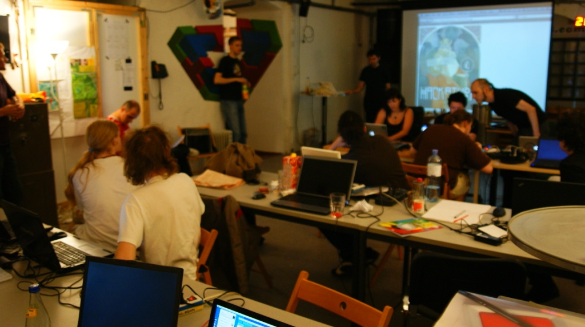

CLONES
- Modelos Clone
- Clones com bootloaders compatíveis
- Placas sem ATmega
O documento de política oficial enfatiza que o projeto é aberto para a incorporação de trabalhos paralelos no produto original, e apesar de o hardware e software serem projetados sob licenças copyleft, os desenvolvedores vem expressando um desejo de que o nome "Arduino" (ou derivados dele) seja exclusivo para o produto oficial, e não seja usado para trabalhos de terceiros sem autorização.
Devido a isso, um grupo de utilizadores criou um projeto alternativo, baseado na versão Diecimila, chamado de Freeduino, sendo que o nome não possui nenhum uso de direito autoral, e é livre para ser usado para qualquer fim.
Alguns produtos compatíveis não oficiais que obtiveram êxito em lançamentos, possuem a terminação duino como forma de se referenciar ao dispositivo da qual derivaram.
1. MODELOS CLONE

Metalab, local onde se desenvolve o Metaboard, clone do Arduino
As placas a seguir são quase ou totalmente compatíveis tanto com o hardware quanto com o software do Arduino, incluindo serem capazes de aceitarem placas derivadas do mesmo.
| MODELO |
DESCRIÇÃO |
| BlackBoard |
Placa brasileira fabricada pela RoboCore. Utiliza o ATmega328 e é compatível com todos os shields feitos para Arduino UNO R3 e versões anteriores a ele. |
| Freeduino SB |
Fabricado e vendido como mini-kit pela Solarbotics Ltd. |
| Freeduino Max Serial |
Placa com porta padrão serial DB9, fabricado e vendido em pacote ou em partes pela Fundamental Logic. |
| Freeduino Through-Hole |
Superfície montada, fabricada e vendida como um pacote pela NKC Electronics. |
| Illuminato |
Utiliza ATMega645 ao invés de um ATMega168. Disponibiliza 64k de flash, 4K de RAM e 32 pinos gerais de E/S. O Hardware e firmware são código aberto. Projetada para ter uma aparência esbelta e tem 10 LEDs que podem ser controlados usando uma instrução "oculta" . é desenvolvida pela Liquidware. |
| Metaboard |
Projetada para ter pouca complexidade e baixo preço. O hardware e firmware são código aberto. É desenvolvida pela Metalab, um hackerspace em Viena. |
| Seeeduino |
Derivada da Diecimila. |
| eJackino |
Pacote da CQ no Japão. Similar ao Seeeduino, podendo utilizar placa universais como os shields. Na parte de trás, há uma "estação Akihabara" de seda, parecido com o do Arduino. |
| Wiseduino |
Placa microcontroladora, incluindo um relógio de tempo real (RTC) DS1307, com bateria reserva, um chip EEPROM 24LC256 e um conector para adaptadores XBee. |
| Brasuino |
Baseada no arduino Uno, mas redesenhada com o software livre KiCAD. Mantém compatibilidade com o Arduino Uno original, com algumas melhorias. O hardware é licenciado como GPL. Desenvolvida, fabricada e comercializada pela Holoscópio, do Brasil. |
| Funduino |
Um clone com o objetivo de ser mais barato, mantém compatibilidade com o Arduino Uno original sem muitas melhorias. |
| Marminino |
Um clone Cearense de baixo custo com trilhas largas e espaçadas, utiliza um ATMEGA 328 e tem objetivo de ser custo mínimo. |
| MBZ Pro Wifi |
Placa standalone brasileira, com suporte ao módulo Wifi ESP-01, conexão para RTC e área de prototipagem para soldar componentes e módulos. |
2. CLONES COM BOOTLOADERS COMPATÍVEIS
As placas a seguir são compatíveis com o software do Arduino mas não aceitam shields. Elas possuem diferentes conectores para energia e E/S, tais como uma série de pinos do lado de baixo da placa, facilitando assim o uso com ProtoBoards, ou para conexões mais específicas.
| MODELO |
DESCRIÇÃO |
CHIP CONTROLADOR |
| Alevino |
Módulo compacto, fabricado no Brasil pela Circuitar, com pinagem compatível com Arduino Nano e interface USB externa. Faz parte do sistema Nanoshields |
ATmega328P |
| Oak Micros om328p |
Arduino Duemilanove compactado até um dispositivo que seja capaz de ser prototificada (36mm x 18mm), que pode ser inserida em um soquete padrão de 600mil e 28 pinos. Capacidade de USB e 6 LEDs embutidos |
ATmega328P |
| Boarduino |
Um clone de baixo-custo da Diecimila feito para prototipagem, produzida pela Adafruit |
ATmega328P |
| Bare Bones Board (BBB) e Really Bare Bones Board (RBBB) |
Compacto e de baixo-custo, próprio para prototipagem. Feito pela Modern Device |
ATmega168/328P |
| iDuino |
Placa USB para prototipagem, produzida e vendida como um pacote pela Fundamental Logic |
ATmega168/328 |
| Sanguino |
Clone de fonte livre do arduino. Possui 64K de flash, 4K de RAM, 32 pinos de E/S gerais, um pino 40 DIP. É desenvolvido com o intuito de ser utilizado pelo Projeto RepRap |
ATmega644P |
| LEDuino |
Placa reforçada com I²C, decodificador DCC e uma interface CAN-bus. Produzida utilizando montagem superficial vendida pronta pela Siliconrailway. |
NC |
| Stickduino |
Placa de baixo-custo, similar a um pen drive |
ATmega168 |
| Roboduino |
Projetado para robótica. Todas as suas conexões são distribuídas para que os sensores e servos possam facilmente serem anexados. Entradas adicionais para energia e comunicação serial também estão disponíveis. Desenvolvida pela Curious Inventor, L.L.C. |
NC |
| Wireless Widget |
Compacto (35 mm x 70 mm), Baixa voltagem, bateria de energia igual ao do Arduino, e rede sem fio capaz de alcançar até 120 metros de distância. Projetado para ser tanto portátil quanto a baixo custo, para aplicações RSSF |
ATmega168V/328P |
| ZB1 |
Placa que inclui Zigbee rádio (XBee). Podendo ser energizado via USB, adaptador de parede ou uma fonte de bateria externa. Projetado para baixo custo em aplicações RSSF |
ATmega168 |
| NB1A |
Inclui uma bateria reserva para relógio de tempo real e quatro canais DAC, sendo que a maioria dos clones de Arduino precisam de um shield para obter esta função |
ATmega328 |
| NB2A |
Inclui uma bateria reserva para relógio de tempo real e dois canais DAC. Possui o mesmo chip controlador do Sanguino, porém com memória adicional, linhas de E/S e um segundo UART |
ATmega644P |
3. PLACAS SEM ATMEGA
As seguintes placas aceitam placas extensoras para Arduino mas não utilizam os microcontroladores da ATmega. Sendo assim, eles são incompatíveis com o programa original, entretanto, por causa de terem os requerimentos para funcionar os shields, podem trabalhar com outras IDEs.
| MODELO |
DESCRIÇÃO |
| Colduino |
Sistema desenvolvido pela BRTOS baseada em arquitetura Freescale Coldfire V1 |
| ARMmitePRO |
Placa baseada em ARM, programável em BASIC ou C. Fabricada pela Coridium |
| Cortino |
Sistema desenvolvido para ARM 32-bit, com um microprocessador Cortex M3 |
| Pinguino |
Placa baseada num microcontrolador PIC, com suporte USB nativo e programável pelo programa oficial mais um IDE construída em Python |
[ Ir para a Página Inicial ]
|